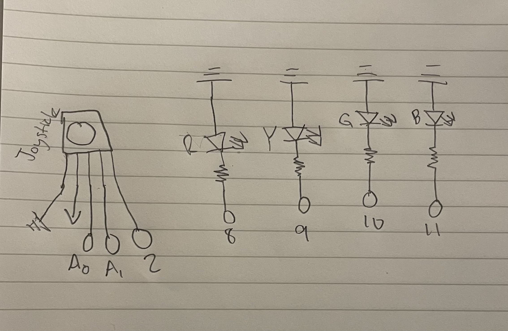

For assignment 6, I decided to make a drawing game, where users can use the joystick to control the drawing and pen color on the laptop screen. Below, I have include my schematic, firmware, my website's code, and my circuits operations.
For assignment 6, I decided to make a drawing game, where users can use the joystick to control the drawing and pen color on the laptop screen. Below, I have include my schematic, firmware, my website's code, and my circuits operations.

// Pin definitions
// Define constant for joystick X-axis analog input pin
const int JOY_X = A0;
// Define constant for joystick Y-axis analog input pin
const int JOY_Y = A1;
// Define constant for joystick button digital input pin
const int JOY_BUTTON = 2;
// Define constant for red LED digital output pin
const int LED_RED = 8;
// Define constant for green LED digital output pin
const int LED_GREEN = 9;
// Define constant for blue LED digital output pin
const int LED_BLUE = 10;
// Define constant for yellow LED digital output pin
const int LED_YELLOW = 11;
// Variable to store current color index (0=red, 1=yellow, 2=green, 3=blue)
int currentColor = 0; // 0=red, 1=green, 2=blue, 3=yellow
// Variable to store the previous button state for detecting button press
bool lastButtonState = HIGH;
// Setup function runs once when Arduino powers on or resets
void setup() {
// Initialize serial communication at 9600 baud rate
Serial.begin(9600);
// Set joystick button pin as input with internal pull-up resistor enabled
pinMode(JOY_BUTTON, INPUT_PULLUP);
// Set red LED pin as output
pinMode(LED_RED, OUTPUT);
// Set green LED pin as output
pinMode(LED_GREEN, OUTPUT);
// Set blue LED pin as output
pinMode(LED_BLUE, OUTPUT);
// Set yellow LED pin as output
pinMode(LED_YELLOW, OUTPUT);
// Start with red LED on
// Call updateLEDs function to turn on the initial LED (red)
updateLEDs();
}
// Loop function runs continuously after setup completes
void loop() {
// Read joystick values
// Read analog value (0-1023) from joystick X-axis and store in xVal
int xVal = analogRead(JOY_X);
// Read analog value (0-1023) from joystick Y-axis and store in yVal
int yVal = analogRead(JOY_Y);
// Read button (detect press)
// Read digital state of joystick button (HIGH=not pressed, LOW=pressed)
bool buttonState = digitalRead(JOY_BUTTON);
// Check for button press (transition from HIGH to LOW)
// Detect if button was just pressed (state changed from HIGH to LOW)
if (buttonState == LOW && lastButtonState == HIGH) {
// Increment currentColor and wrap around using modulo to cycle through 0-3
currentColor = (currentColor + 1) % 4; // Cycle through 0-3
// Call updateLEDs function to turn on the new color LED
updateLEDs();
// Wait 200 milliseconds to debounce the button (prevent multiple triggers)
delay(200); // Debounce
}
// Store current button state to compare in next loop iteration
lastButtonState = buttonState;
// Send data to p5.js
// Send X joystick value to serial port
Serial.print(xVal);
// Send comma separator
Serial.print(",");
// Send Y joystick value to serial port
Serial.print(yVal);
// Send comma separator
Serial.print(",");
// Send current color index followed by newline character
Serial.println(currentColor);
// Wait 20 milliseconds before next loop iteration
delay(20);
}
// Function to update which LED is lit based on currentColor value
void updateLEDs() {
// Turn all LEDs off first
// Turn off red LED
digitalWrite(LED_RED, LOW);
// Turn off green LED
digitalWrite(LED_GREEN, LOW);
// Turn off blue LED
digitalWrite(LED_BLUE, LOW);
// Turn off yellow LED
digitalWrite(LED_YELLOW, LOW);
// Turn on the current color LED
// Check currentColor value and turn on corresponding LED
switch(currentColor) {
// If currentColor is 0 (red)
case 0:
// Turn on red LED
digitalWrite(LED_RED, HIGH);
// Exit switch statement
break;
// If currentColor is 1 (yellow)
case 1:
// Turn on yellow LED
digitalWrite(LED_YELLOW, HIGH);
// Exit switch statement
break;
// If currentColor is 2 (green)
case 2:
// Turn on green LED
digitalWrite(LED_GREEN, HIGH);
// Exit switch statement
break;
// If currentColor is 3 (blue)
case 3:
// Turn on blue LED
digitalWrite(LED_BLUE, HIGH);
// Exit switch statement
break;
}
}
<!DOCTYPE html>
<html lang="en">
<head>
<!-- Set character encoding to UTF-8 for proper text display -->
<meta charset="UTF-8">
<!-- Make the page responsive on mobile devices -->
<meta name="viewport" content="width=device-width, initial-scale=1.0">
<!-- Set the title that appears in the browser tab -->
<title>Arduino Drawing Game</title>
<!-- Load the p5.js library from a CDN (Content Delivery Network) -->
<script src="https://cdnjs.cloudflare.com/ajax/libs/p5.js/1.7.0/p5.min.js"></script>
</head>
<body>
<script>
// Declare variable to store the serial port connection
let port;
// Store the joystick X-axis value (starts at center position 512)
let joyX = 512;
// Store the joystick Y-axis value (starts at center position 512)
let joyY = 512;
// Store the current color index (0=red, 1=green, 2=blue, 3=yellow)
let currentColor = 0;
// Array of color names corresponding to the LEDs
let colors = ['red', 'yellow', 'green', 'blue'];
// Store the previous X position for drawing smooth lines
let prevX;
// Store the previous Y position for drawing smooth lines
let prevY;
// p5.js setup function - runs once when the program starts
function setup() {
// Create canvas 800 by 600
createCanvas(800, 600);
// Set the background color to white
background(255);
// Create a button with the text "Connect Arduino"
let btn = createButton('Connect Arduino');
// When the button is clicked, call the connect function
btn.mousePressed(connect);
// Initialize previous position to center of canvas
prevX = width / 2;
// Initialize previous position to center of canvas
prevY = height / 2;
}
// Async function to connect to the Arduino via Web Serial API
async function connect() {
// Request the user to select a serial port
port = await navigator.serial.requestPort();
// Open the selected port with a baud rate of 9600
await port.open({ baudRate: 9600 });
// Start the loop that continuously reads data from Arduino
readLoop();
}
// Async function that continuously reads data from the Arduino
async function readLoop() {
// Get a reader object to read data from the serial port
let reader = port.readable.getReader();
// Create an empty string to store incomplete data between reads
let buffer = '';
// Infinite loop to continuously read data
while (true) {
// Read data from the serial port
const { value, done } = await reader.read();
// If the stream is done (port closed), exit the loop
if (done) break;
// Convert the bytes to text and add to the buffer
buffer += new TextDecoder().decode(value);
// Split the buffer into lines using newline character
let lines = buffer.split('\n');
// Keep the last incomplete line in the buffer
buffer = lines.pop();
// Process each complete line
for (let line of lines) {
// Split the line by commas to get individual values
let data = line.split(',');
// Check if we received exactly 3 values (x, y, color)
if (data.length === 3) {
// Parse and store the X joystick value
joyX = parseInt(data[0]);
// Parse and store the Y joystick value
joyY = parseInt(data[1]);
// Parse and store the current color index
currentColor = parseInt(data[2]);
}
}
}
}
// p5.js draw function - runs continuously
function draw() {
// Map joystick X value (0-1023) to canvas width (0-800)
let x = map(joyX, 0, 1023, 0, width);
// Map joystick Y value (0-1023) to canvas height (0-600)
let y = map(joyY, 0, 1023, 0, height);
// Set the stroke color based on the current color index
stroke(colors[currentColor]);
// Set the line thickness to 3 pixels
strokeWeight(10);
// Draw a line from the previous position to the current position
line(prevX, prevY, x, y);
// Update previous X position to current X position for next frame
prevX = x;
// Update previous Y position to current Y position for next frame
prevY = y;
}
</script>
</body>
</html>
https://youtu.be/tixsZp04f-o